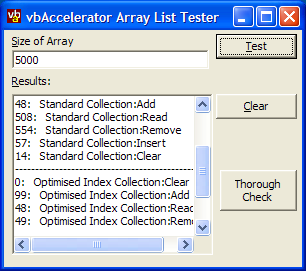
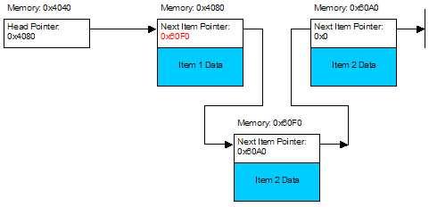

VB Index Collection Techniques (19K)
VB Index Collection Techniques (19K)
 VB Object Index Collection (22K)
VB Object Index Collection (22K)
 2 Jan 2003
2 Jan 2003
First Posted
 Storing Objects Against ItemData and Tag properties
Storing Objects Against ItemData and Tag properties
 IShellFolder Extended Type Library Version 1.2 (ISHF_Ex.Tlb)
IShellFolder Extended Type Library Version 1.2 (ISHF_Ex.Tlb)

A Fast Index-Based Collection
Building a fast new Visual Basic Collection for access by Index
VB provides a simple Collection for storing objects. However, this object is internally implemented as a hashed linked list, and as such provides good performance for access either by an item's key or through enumeration. If you want to access an object by its index, however, you need to enumerate through all the items until you reach the correct one, which is slow. This article presents an alternative collection which is optimised for access by index, and, for large numbers of items, runs over 100x quicker than the VB equivalent.
About VB Collections
Let's say you create a VB collection called myCollection with 10,000 items in it, and say the item at position 7000 has a key "BCW456007". Why is it quick to access the item using c.Item("BCW456007") but slower to get the item using c.Item(7000)?
The reason for this is the internal implementation of the VB Collection itself. A VB collection consists of two structures in memory: a linked list to store the actual values in the collection and an internal structure known as a Hashtable which allows quick lookup of any key to the items in the list. We'll cover the workings of these in turn.
Linked Lists
The linked list method is a classic algorithm for storing data when you want to allocate the memory in small blocks. In a linked list, each item in the list has an additional space allocated to store the next item in the list, as shown below:

The advantage of a linked list is it is very easy to insert or remove items. All you need to do is allocate the new item and then change the pointer of the item prior to the one you're inserting, and set the pointer to the next item along:
Likewise removal is very efficient: an you simply find the next pointer associated with the item to remove, remove the item and then change the pointer for the previous item in the list to the pointer for the item you just removed.
Many linked-list implementations store both a forward and a backward pointer to make it easier to find the previous item in the list as well as the next one. Lists constructed this way are called "Double Linked Lists" and it is likely that internally the VB collection is implemented this way.
However, the high efficiency for adding, removing and inserting items is offset against the increased difficulty in finding the item at a particular index in the linked list. If you are interested in the 10,000th item in the list, you have to start at the beginning and follow 10,000 pointers until you get there (or, if the list is doubly-linked you could choose to start from the beginning or the end depending on how far the item you're looking for is from the count of the collection).
Hashtables
A Hashtable is a lookup structure which aims to make finding a particular item more efficient. The idea is to reduce the number of data items which are accessed before you get the pointer to the data you're interested in, and the way it works is related to the way indexes in databases work (although it is less sophisticated).
A simple hashtable is implemented as follows: firstly, a hashing function is defined. This is a function which converts a key of arbitrary size to a number within a fixed range. The idea is that the hash function will produce a nicely even distribution of hash values for a given key. Then, an array for each of the possible hash values. Each element in this array then stores a linked list of the actual keys and then a pointer to the data itself within the main list.
So to find a particular item by its key, you do the following:
- Determine the Hash of the key using the Hash function
- Find the linked list from the array containing all of the hash tables. If there isn't anything there, then the key doesn't exist, otherwise...
- Enumerate the values in the linked list until you find one with a matching key (remember that you are reducing a key of arbitrary size to a shorter, fixed range list, so different keys may have the same Hash code). When found, you have the item.
This may sound like it all takes a long time to do, but for long lists in fact turns out many times quicker than searching through the entire list because so much less searching is involved (assuming that the Hash function is any good!).
An example of a class which implements a string hash function in VB is as follows:
' Size of HashTable
Private m_lHashTableSize As Long
' Pseudorandom cryptographic array used to mix up
' the input data and create a hash function with
' good chance of preventing clashes:
Private rand8(0 To 255) As Long
Private Sub Class_Initialize()
Dim i As Long, j As Long
Dim s As Byte, k As Long
' Create a pseudorandom array using the
' alleged RC4 algorithm.
' See:
' http://burtleburtle.net/bob/hash/pearson.html
' This initialisation is to prevent a low repeat count:
For i = 0 To 255
rand8(i) = i
Next i
' Here we go:
k = 7
For j = 0 To 3
For i = 0 To 255
s = rand8(i)
k = (k + s) Mod 256
rand8(i) = rand8(k)
rand8(k) = s
Next i
Next j
' Hash table is 65k in size. This should remain
' very efficient for > 200,000 items.
m_lHashTableSize = &HFFFF&
End Sub
Private Function Hash(ByVal sKey As String) As Long
Dim b() As Byte
Dim i As Long
Dim lKeyVal As Long
Dim h1 As Long, h2 As Long
' using hashing algorithm "Variable String Exclusive-Or
' method (tablesize up to 65,536)". See
' Dictionaries ->Hash Tables section at
' http://members.xoom.com/thomasn/s_man.htm
b = sKey
h1 = b(0): h2 = h1 + 1
For i = 1 To UBound(b)
h1 = rand8(h1 Xor b(i))
h2 = rand8(h2 Xor b(i))
Next
lKeyVal = h1 * &HFF& + h2
Hash = lKeyVal Mod m_lHashTableSize
End Function
Thus you should be able to see that a VB collection is very efficient for adding, inserting and removing items, and is also quick for finding items by their Key. But it will always be slow if you want to access the item by index. So what if you want to access by index?
Arrays as Collections
The most efficient way of storing data so it is easily accessible by index is in an array with fixed length members. In an array, data is stored as a contiguous block of memory (although this means that it is more likely you'll run out of memory using arrays than linked lists, that doesn't happen so frequently these days). To find any item within the array, you simply need to know the size of each member and the pointer to the top of the array; then you can directly derive the pointer to the item.
On the other hand, insert and remove performance is generally much worse because if you need to shift all the items below the item you're inserting or removing. However, you can make these operations almost as quick as a VB Collection by taking advantage of the Win32 API block memory copy function. That's what I've built in this article and as you'll see later the performance can be extremely good.
First, we'll look at implementing an index collection using VB arrays. In the download "VB Index Collection Techniques" this is implemented as cIndexCollection. In my implementation I store a larger array than is necessary, increasing the size by a chunk each time more memory is needed (the AllocationSize). This reduces the number of times you need to reallocate the array and hence hopefully improves performance.
- Adding an Item
Adding an item is straightforward: just ensure the array is of sufficient size and then set the element:m_lCount = m_lCount + 1 If m_lCount > m_lArraySize Then m_lArraySize = m_lArraySize + m_lAllocationSize ReDim Preserve m_lItem(1 To m_lArraySize) As Long End If m_lItem(m_lCount) = Value - Inserting an Item
When inserting an item, you need to shift everything after the index up one prior to inserting:m_lCount = m_lCount + 1 If m_lCount > m_lArraySize Then m_lArraySize = m_lArraySize + m_lAllocationSize ReDim Preserve m_lItem(1 To m_lArraySize) As Long End If ' Shift up from Index to m_lCount-1 For j = m_lCount - 1 To Index Step -1 m_lItem(j + 1) = m_lItem(j) Next j ' Set item at Index m_lItem(Index) = Value - Removing an Item
Likewise if you're removing an item, you need to shift everything above the item which is being removed unless the item being removed is at the end:' shift down from Index to m_lCount-1 For j = Index + 1 To m_lCount m_lItem(j - 1) = m_lItem(j) Next j m_lCount = m_lCount - 1
Testing the performance of this approach demonstrates that although you can read through the items in the array many times quicker (over 100x if the list is large) than a collection, inserting and removing are very slow.
To improve matters, we can use the Win32 API RtlMoveMemory block copy function to shift a large number of elements at the same time. Here's the function to insert an item modified to use this approach. First we note that an item within an array of longs, if passed by reference to the API function, provides the pointer to its location in memory. This avoids any pointer arithmetic to work out where an item is within the array. Then remembering that the array is a contiguous block of memory and a long has 4 bytes can work out what size to copy:
Private Declare Sub CopyMemory Lib "kernel32" Alias "RtlMoveMemory" ( _
lpvDest As Any, lpvSource As Any, ByVal cbCopy As Long)
...
lTemp = m_lItem(m_lCount)
' Increase array size as required:
m_lCount = m_lCount + 1
If m_lCount > m_lArraySize Then
m_lArraySize = m_lArraySize + m_lAllocationSize
ReDim Preserve m_lItem(1 To m_lArraySize) As Long
End If
' Shift up from Index to m_lCount-1
CopyMemory m_lItem(Index + 1), m_lItem(Index), (m_lCount - Index) * 4
' Increase array size:
' Set item at Index
m_lItem(Index) = Value
' Set last item:
m_lItem(m_lCount) = lTemp
Using this method, the Insert and Remove performance is now on a par with the VB collection - just slightly slower. Try the sample code with 10,000 items: here's the results from my AMD XP2200 box. Note that when removing, the code uses the worst case by removing the first item. All times given in ms:
| Collection | Add 10,000 | Insert 10,000 | Read 10,000 | Remove 10,000 |
| VB Collection | 49 | 94 | 2866 | 74 |
| Index Collection (VB code) | 63 | 893 | 41 | 931 |
| Index Collection (Optimised) | 73 | 266 | 41 | 145 |
Using the Code to Store Something Useful
Although this demonstrates that a faster index collection is possible, the code above only stores Long values. To make it more useful, there is also a version which allows you to store Objects. This is provided in the "VB Object Index Collection" download. This extends the implementation above to use the techniques described in the article Storing Objects Against ItemData and Tag Properties in order to store objects against the long values in the array. Performance results for 10,000 items again are as follows (note in this case the Remove was set to remove from the end of the array, which VB's Collection isn't so good at):
| Collection | Add 10,000 | Insert 10,000 | Read 10,000 | Remove 10,000 |
| VB Collection | 116 | 163 | 7581 | 8277 |
| ArrayList | 146 | 409 | 52 | 106 |
Conclusion
VB's Collection offers good performance for adding and inserting items, and accessing and removing them by their Keys. However, performance is poor if items are to be accessed by index. If you want a collection to access objects by index, the cArrayList implementation provided here can improve performance by over 100x.